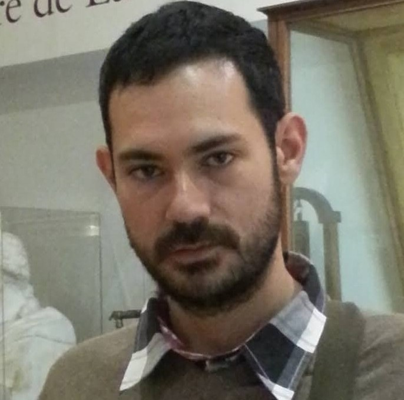

Dr. Fernando Sánchez Vega
Researcher appointed at CIMAT-Gto by CONAHCyT

Fernando Sánchez-Vega obtained his MS and PhD degrees in Computer Science from the National Institute for Astrophysics, Optics and Electronics (INAOE, Mexico) in 2010 and 2016, respectively. He received the Young Researchers Award from the Center for Advanced Studies in Information and Communication Technologies (CEATIC) at the University of Jaen (UJaen), Spain in 2017. In 2020, he held a Postdoctoral Fellow position in the Department of Computer Science at the Mathematics Research Center (CIMAT, Mexico) and another in the Data Sciences Program in Humanities at the Colegio de Mexico (COLMEX) in 2021. Since 2022, Dr. Sánchez-Vega has been a Professor in the Department of Computer Science at CIMAT, Mexico. His research topics of interest include deep learning, natural language processing, language and vision, and data sciences. He regularly collaborates with multiple research groups, including the "Lexicon, Dictionary, and Information Technology" Laboratory (LDI) at Université Paris Nord, France, and the Natural Language Engineering Lab at the Pattern Recognition and Human Language Technologies (PRHLT) Research Center in Spain, Language Technologies Laboratory (LabTL) at INAOE, Mexico, among others.